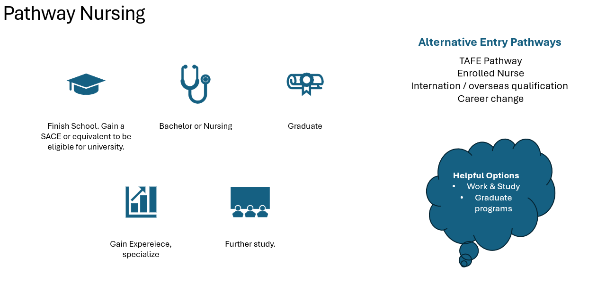

There is more than one way to become a nurse.

Nursing offers so many different education and career pathways depending on a person’s qualifications and experiences. In AUSTRALIA, two important entry pathways are becoming an Enrolled Nurse (EN) through diploma of Nursing or becoming a registered nurse (RN) though bachelor of Nursing. These roles have different scopes of practice, responsibilities, and educational requirements. Nurses can also keep studying and develop specialist knowledge, and progress into advanced and leadership positions. My research showed that knowledge of pathways is important, because 75% of my community survey did not know of any. This encouraged me to investigate how to enter nursing and the opportunities may be available.
Pathway 1: Becoming an enrolled nurse
An enrolled nurse generally completes a diploma of nursing through their education provider, they must meet the restoration requirement. Enrolled nursing provides car within their scope of practice, and work under supervision of a registered nurse. Though this level and supervision depends on the clinical setting and care being provided. Their responsibilities may include monitoring patients, providing personal care, and clinical. Communicating changes in patient's conditions, supporting treatment and contributing to care plans. For people who want to enter nursing through education, the Diploma of Nursing can provide a direct pathway into registered nursing. For example, my research into TAFE SA and Flinders University identified as diploma of nursing as a direct pathway, and combines vocational study as an opening towards a nursing qualification. This shows that becoming a registered nurse does not require a direct route form year 12, and the entry requirements vary between education providers, so I would suggest checking the course information.
Becoming a Registered nurse
A common route is becoming a registered nurse is completing a bachelor of nursing, usually over three years of full-time study. This degree combines with theoretical and practical in clinical placement learning. Registered nurses work across many settings.
Pathway 3: Specialising/Advancing in nursing
Nurses may also progress into specialised areas (Please look more into possible specialties in the specialties area.) Being management, education, or even research. One example is a nurse practitioner, an advanced practice role with expanded scope of practice. Nurse practitioners can access and even diagnose conditions, order and interpret investigations, prescribe medicines and refer patients to other healthcare professions. Becoming a nurse practitioner in Australia requires significant nursing experience and backed Master of Nursing practitioner qualification. It is a longer-term career pathway rather than entry level. Other nurses may become a nurse unit anger, clinical nurse consultants, clinical educators or more, these roles demonstrate nursing involves leadership, teaching, and other advanced responsibilities.